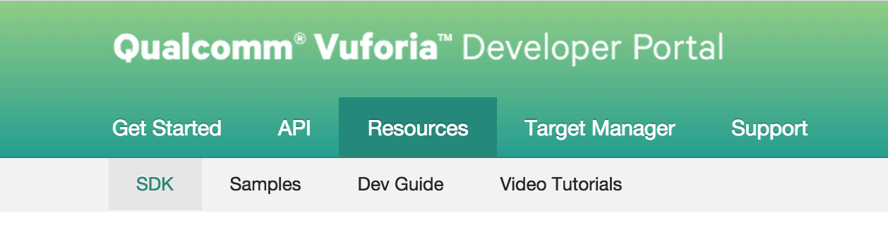
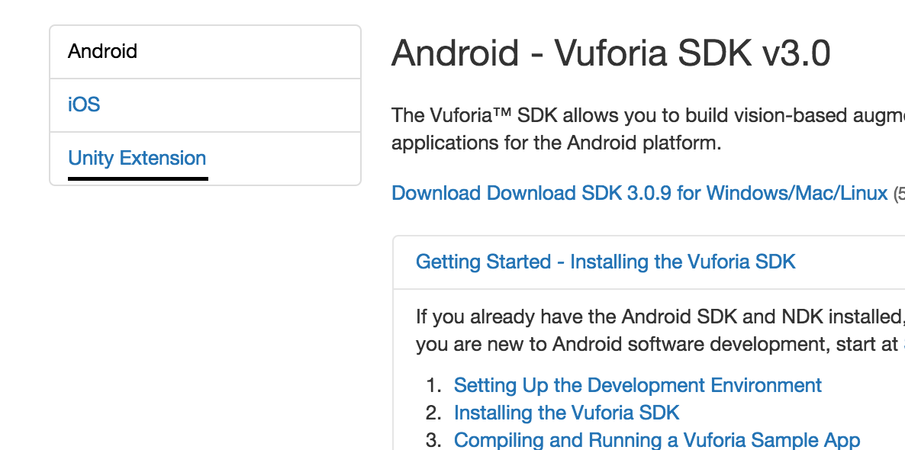

<!doctype html>
<html lang="en">

	<head>
		<meta charset="utf-8">

		<title>IEEE VR: OpenCV</title>

		<meta name="description" content="A framework for easily creating beautiful presentations using HTML">
		<meta name="author" content="Hakim El Hattab">

		<meta name="apple-mobile-web-app-capable" content="yes" />
		<meta name="apple-mobile-web-app-status-bar-style" content="black-translucent" />

		<meta name="viewport" content="width=device-width, initial-scale=1.0, maximum-scale=1.0, user-scalable=no, minimal-ui">

		<link rel="stylesheet" href="css/reveal.css">
		<link rel="stylesheet" href="css/theme/black.css" id="theme">

		<!-- Code syntax highlighting -->
		<link rel="stylesheet" href="lib/css/zenburn.css">

		<!-- Printing and PDF exports -->
		<script>
			var link = document.createElement( 'link' );
			link.rel = 'stylesheet';
			link.type = 'text/css';
			link.href = window.location.search.match( /print-pdf/gi ) ? 'css/print/pdf.css' : 'css/print/paper.css';
			document.getElementsByTagName( 'head' )[0].appendChild( link );
		</script>

		<!--[if lt IE 9]>
		<script src="lib/js/html5shiv.js"></script>
		<![endif]-->
	</head>

	<body>

		<div class="reveal">

			<!-- Any section element inside of this container
				is displayed as a slide -->
			<div class="slides">
				<section data-markdown>
					<script type="text/template">
						# Introduction

						We encourage you to view the presentation from your laptops as reference during the example projects. The presentation is being hosted online at [byteflame.org/ieee_vr](//byteflame.org/ieee_vr)

						## General Overview

						- OpenCV
						- Vuforia
						- Unity Integration
					</script>
				</section>
				<section data-markdown>
					<script type="text/template">
						</img>

						## Emerging Analytics Center

						presents
					</script>
				</section>

				<section data-markdown>
					<script type="text/template">
						# OpenCV and Unity

						Using OpenCV in Unity
					</script>
				</section>

				<section data-markdown>
					<script type="text/template">
						# Computer Vision
						## An Overview

						Computer Vision is a field of Computer Science that studies methods of acquiring, processing, and understanding images in a computer.
					</script>
				</section>

				<section data-markdown>
					<script type="text/template">
						# OpenCV
						## An Overview

						OpenCV is an open source computer vision library that is maintained by intel. OpenCV is targeted for real time applications.  Its speed and efficiency have quickly made it an industry standard.

						OpenCV is used by many Fortune 500 companies such as:

						- Google
						- Ford
						- Apple
						- Intel
					</script>
				</section>

				<section data-markdown>
					<script type="text/template">
## Snapdragon Mobile Processors

The Snapdragon processor is state of the art for mobile phones

Featured in the new Moto X and the Samsung Galaxy Note 4
					</script>
				</section>

				<section data-markdown>
					<script type="text/template">
## HomePlug

A link to the official video can be found [here](https://www.youtube.com/watch?v=cx-X0UsWCG8)

<object width="640" height="390" class="ytvideo">
	<param name="movie" value="https://www.youtube.com/v/cx-X0UsWCG8?version=3&autoplay=0&autohide=1&rel=0"></param>
	<param name="allowScriptAccess" value="always"></param>
	<embed src="https://www.youtube.com/v/cx-X0UsWCG8?version=3&autoplay=0&autohide=1&rel=0" type="application/x-shockwave-flash" allowscriptaccess="always" width="640" height="390"></embed>
</object>

					</script>
				</section>

				<section data-markdown>
					<script type="text/template">
# Vuforia
## Application Overview

					</script>
				</section>

				<section data-markdown>
					<script type="text/template">
## Text Recognition

This example application was created by Qualcomm. A link to the official video can be found [here](https://www.youtube.com/watch?v=KLqFQ2u52iU)

<object width="640" height="390" class="ytvideo">
		<param name="movie" value="https://www.youtube.com/v/KLqFQ2u52iU?version=3&autoplay=0&autohide=1&rel=0"></param>
		<param name="allowScriptAccess" value="always"></param>
		<embed src="https://www.youtube.com/v/KLqFQ2u52iU?version=3&autoplay=0&autohide=1&rel=0" type="application/x-shockwave-flash" allowscriptaccess="always" width="640" height="390"></embed>
</object>
					</script>
				</section>

				<section data-markdown>
					<script type="text/template">
## Object Recognition

This example application was created by Qualcomm. A link to the official video
can be found [here](https://www.youtube.com/watch?v=mXpr37pR34U)

<object width="640" height="390" class="ytvideo">
	<param name="movie" value="https://www.youtube.com/v/mXpr37pR34U?version=3&autoplay=0&autohide=1&rel=0"></param>
	<param name="allowScriptAccess" value="always"></param>
	<embed src="https://www.youtube.com/v/mXpr37pR34U?version=3&autoplay=0&autohide=1&rel=0" type="application/x-shockwave-flash" allowscriptaccess="always" width="640" height="390"></embed>
</object>
					</script>
				</section>

				<section data-markdown>
					<script type="text/template">
## Smart Terrain

This example application was created by Qualcomm. A link to the official video can be found [here](https://www.youtube.com/watch?v=UOfN1plW_Hw)

<object width="640" height="390" class="ytvideo">
		<param name="movie" value="https://www.youtube.com/v/UOfN1plW_Hw?version=3&autoplay=0&autohide=1&rel=0"></param>
		<param name="allowScriptAccess" value="always"></param>
		<embed src="https://www.youtube.com/v/UOfN1plW_Hw?version=3&autoplay=0&autohide=1&rel=0" type="application/x-shockwave-flash" allowscriptaccess="always" width="640" height="390"></embed>
</object>

					</script>
				</section>

				<section data-markdown>
					<script type="text/template">

## Cylindrical Targets

This example application was created by Qualcomm. A link to the official video can be found [here](https://www.youtube.com/watch?v=LqgmlkJcqA4)

<object width="640" height="390" class="ytvideo">
	<param name="movie" value="https://www.youtube.com/v/LqgmlkJcqA4?version=3&autoplay=0&autohide=1&rel=0"></param>
	<param name="allowScriptAccess" value="always"></param>
	<embed src="https://www.youtube.com/v/LqgmlkJcqA4?version=3&autoplay=0&autohide=1&rel=0" type="application/x-shockwave-flash" allowscriptaccess="always" width="640" height="390"></embed>
</object>

					</script>
				</section>

				<section data-markdown>
					<script type="text/template">

# Vuforia
## Getting Started

					</script>
				</section>

				<section data-markdown>
					<script type="text/template">

## Creating a Developer Account

Registering for a developer account is easy and can be found __[here](https://developer.vuforia.com/user/register)__

Enter your information and sign up for a free developer account.

					</script>
				</section>

				<section data-markdown>
					<script type="text/template">

## Unity Extension
### Resource Page Navigation

The navigation bar on the top of the page has links to various sites available to developers.

Click the __Resource__ tab.

<!-- Illustration -->
</img>

					</script>
				</section>

				<section data-markdown>
					<script type="text/template">

## Unity Extension
### Resource Page Navigation

The bar on the left contains extensions for Android, iOS, and Unity. For this tutorial, download the current extension for Unity.


<!-- Illustration -->
</img>

					</script>
				</section>

				<section data-markdown>
					<script type="text/template">

## Importing to Unity

With Unity open, run the extension from the download location, and import all the files.

This extension will import the Vuforia SDK into the root directory of the project.

					</script>
				</section>

				<section data-markdown>
					<script type="text/template">

# Getting to know Vuforia
## The Insides

					</script>
				</section>

				<section data-markdown>
					<script type="text/template">

## File System

### Editor and Plugins folders
Contains the code

### Qualcomm Augmented Reality
Contains important resources

### StreamingAssets
Contains the target databases from the developer portal

					</script>
				</section>

				<section data-markdown>
					<script type="text/template">

# Getting to know Vuforia
## Asset Analysis

					</script>
				</section>

			</div>

		</div>

		<script src="lib/js/head.min.js"></script>
		<script src="js/reveal.js"></script>

		<script>

			// Full list of configuration options available at:
			// https://github.com/hakimel/reveal.js#configuration
			Reveal.initialize({
				controls: false,
				progress: true,
				history: true,
				center: true,

				transition: 'slide', // none/fade/slide/convex/concave/zoom

				// Optional reveal.js plugins
				dependencies: [
					{ src: 'lib/js/classList.js', condition: function() { return !document.body.classList; } },
					{ src: 'plugin/markdown/marked.js', condition: function() { return !!document.querySelector( '[data-markdown]' ); } },
					{ src: 'plugin/markdown/markdown.js', condition: function() { return !!document.querySelector( '[data-markdown]' ); } },
					{ src: 'plugin/highlight/highlight.js', async: true, condition: function() { return !!document.querySelector( 'pre code' ); }, callback: function() { hljs.initHighlightingOnLoad(); } },
					{ src: 'plugin/zoom-js/zoom.js', async: true },
					{ src: 'plugin/notes/notes.js', async: true }
				]
			});

		</script>

	</body>
</html>
